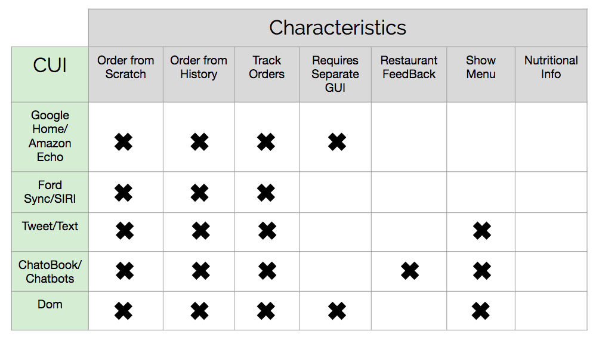
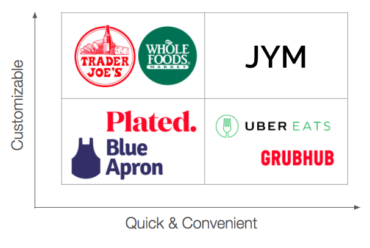
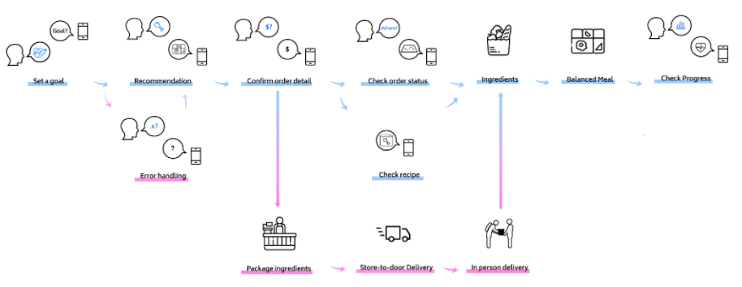

JYM
Made as an academic project, I worked on a voice character user interface (CUI) that focused on grocery-ordering and personal health.
We created JYM, which is a grocery-ordering CUI that is focused on helping users achieve and track personal nutrition goals. The CUI has functionality for setting a goal based around the five main food groups. After setting a goal, the CUI supports starting a Whole Foods grocery order by recommending dishes based on the user’s goal and preferences (eg. cuisines and time constraints). From there, the CUI allows users to select a dish’s ingredients to be ordered, adjust the details of the order, and place the order for delivery. To keep users on track, JYM can recommend healthier alternatives or suggest side dishes to balance a meal out. The delivery location is based on the user’s current location, which can be tracked by the CUI’s app, but it can also be manually corrected by the user. Once an order has been placed, the user can speak to the CUI to hear the order’s status. The user can also check in with the CUI to hear about their nutrition progress from the past week.
Research | Competitive Analysis
Before starting, we did a competitive analysis on existing meal ordering bots and the accompanying process and existing voice CUI. Companies that had CUI were Amazon’s Alexa/Google Assistant, Ford Sync/Apple’s Siri, chat bots, and tweet/text.

We found that regardless of voice or text cui, all meal ordering applications lacked nutritional information. This realization was imperative to our design process as we decided to create a meal delivery application with a focus on personal nutrition, which eventually turned into an ingredient delivery application with personalized and curated meals.
To really understand this space, we decided that we should look beyond CUIs and also look at food competitors. We found that the main gap is in customizable meals that are quick and convenient. Grocery stores allow customers to purchase individual ingredients but it is generally not a quick trip, because customers often spend hours shopping. Food delivery services, like GrubHub, are quick to send food to your home, but they aren’t geared towards meals that can be customized to your allergies or health goals.

Additionally, Plated and Blue Apron are grocery delivery systems, but they requires customers to choose from a limited set of dishes. Since there is no freedom to build a meal, we do not say that they offer meal customization. Plated and Blue Apron are also not very convenient, because they deliver predetermined meals once a week. Because they don’t let you choose a meal on the spot based on your present cravings, we do not consider them quick/convenient either. The gap in a customizable and quick/convenient ingredient delivery service motivated our CUI’s purpose.
When we decided on the ingredient delivery space, we recognized that the main market holder is Blue Apron. So, we researched their service and found the following weaknesses that we wanted to address with our CUI:
- Goals are too vague → center the goals around the 5 main food groups
- Encourage healthier eating with tone → when a healthy meal order is placed, end with phrases like “Nice job!” and “You’re killing it!”
- Address situations where someone refuses to eat healthy → balance the meal out with healthier side dishes
Research | User Scenarios

After our competitive analysis, we discovered that our users would be time, health, and quality conscious. They will be people with tight schedules – time conscious, people who want to eat better – health conscious, people who want fresh ingredients – quality conscious.
When developing scenarios, we considered our own personal experiences with meal ordering and food service. We additionally thought about what solutions already existed, and how we could expand them or address a concern they hadn’t noticed.
The following are several of our main scenario ideas:
- Know what to eat but don’t know where
- Know where to eat but don’t know what
- Order in advance: set a time for delivery
- Recommendations: Diet
- Recommendations: Goal (i.e. lose weight, nutrition)
I generated this scenario below, which was pivotal to the design process. We started noticing that there is an untapped market in curating meals based around nutritional information and personal health goals, which became obvious when we referenced our competitive analysis.
“John has a new year’s resolution: lose some weight. He opens the app and sets his preference to “lose weight.” now that the preference is set, john knows that every time he opens the app to look for food, the app will be more likely to suggest restaurants that are health and weight conscious, like him.”
Ideation | Experience Prototyping
We began writing our user script that we eventually tested with experience prototyping. We figured out several errors likes vague goals, encouragement, or how to address specific situations.
- Goals are too vague → center the goals around the 5 main food groups
- Encourage healthier eating with tone → when a healthy meal order is placed, end with phrases like “Nice job!” and “You’re killing it!”
- Address situations where someone refuses to eat healthy → balance the meal out with healthier side dishes
Solution | High Fidelity Prototype

Once we had chosen ingredient delivery, we were stuck between two different video approaches: the ease of ingredient delivery in a time crunch or the benefits of meals curated to your health goal. We focused on the later in my storyboard.
We decided to use Whole Foods as our client, because we believe that our target user group of time, health, and quality conscious people would find their needs best met with the breadth of groceries offered at Whole Foods.
Solution | Take – Away
I took away from the project with new knowledge about CUIs, new tools for prototyping, and better scenario writing skills. We see users using the CUI for fast delivery of fresh ingredients and for tracking their overall progress. On the client side, we see grocery stores, like Whole Foods, benefiting from reaching an untapped millennial crowd who believes that healthy eating is synonymous with eating at restaurants and buying from specialty food stores. All in all, we placed an emphasis on meal-planning for people with health goals when designing JYM.